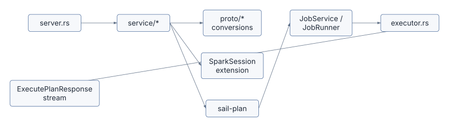
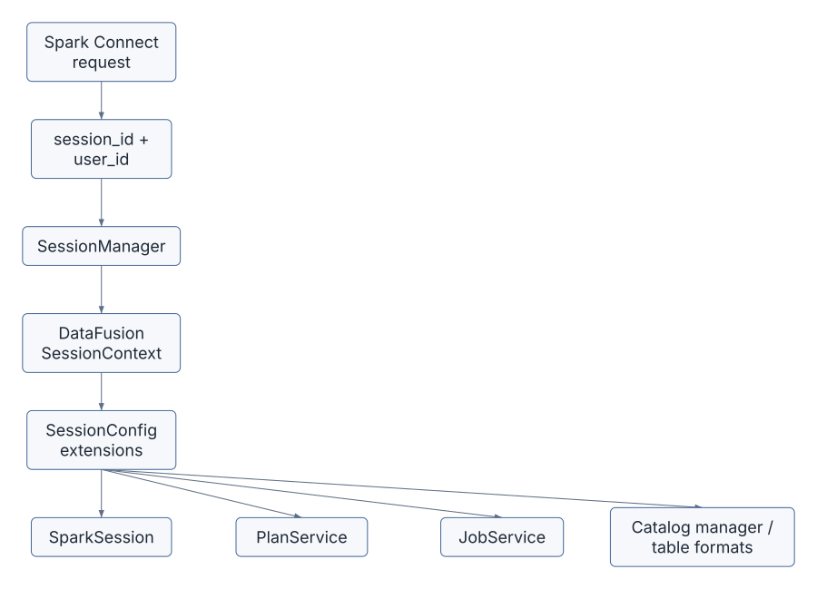
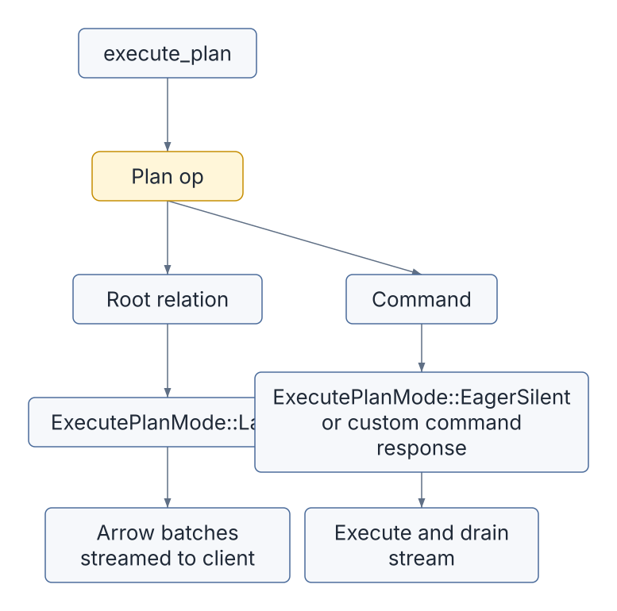
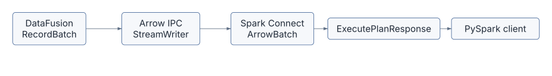
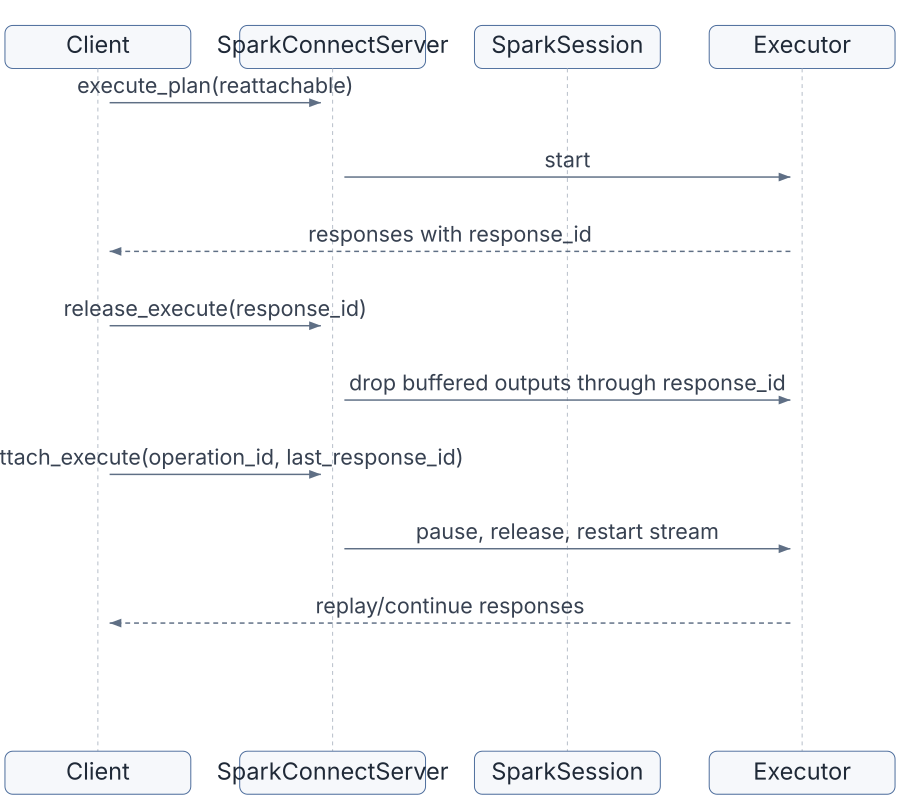
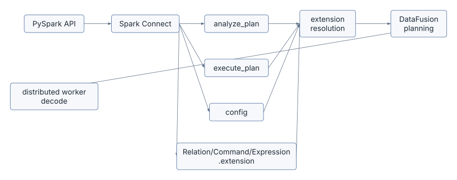

Spark Connect is Sail’s public front door for PySpark. When a PySpark
user writes spark.read.parquet(...).groupBy(...).count(),
Sail does not receive Python bytecode or a Spark JVM object. It receives
Spark Connect protobuf messages over gRPC. The definitive starting point
is Apache Spark’s own Spark
Connect Overview, which describes Spark Connect as a decoupled
client-server architecture using unresolved logical plans as the
protocol.
That design gives Sail its “drop-in replacement” shape. The client can stay PySpark. The server can be Rust. The wire protocol between them is Spark Connect.
PySpark client
-> Spark Connect protobuf messages
-> Sail SparkConnectServer
-> Sail spec
-> DataFusion logical and physical plans
-> Arrow batches in Spark Connect responsesThis chapter follows that front door in code. The goal is to
understand what Spark Connect means architecturally, not just where the
.proto files are generated.
Use these official references alongside this chapter:
SparkSession.builder.remote: the official PySpark API
for connecting to a Spark Connect server with an
sc://host:port URL.client attribute.base.proto, relations.proto,
expressions.proto, commands.proto,
types.proto, and related protocol files.The Spark Connect layer lives mainly in
crates/sail-spark-connect.
| File | Role |
|---|---|
src/server.rs |
Implements the Spark Connect gRPC service |
src/service/plan_executor.rs |
Executes relations, commands, streaming operations, interrupts, and reattach/release |
src/service/plan_analyzer.rs |
Handles schema, explain, tree string, version, DDL parsing, streaming checks |
src/service/config_manager.rs |
Handles runtime Spark config operations |
src/service/artifact_manager.rs |
Placeholder for artifact upload/status support |
src/proto/plan.rs |
Converts Spark Connect relations and commands into Sail specs |
src/proto/expression.rs |
Converts Spark Connect expressions |
src/proto/data_type*.rs |
Converts Spark, Arrow, JSON, and DDL data types |
src/executor.rs |
Converts DataFusion RecordBatch streams into Spark
Connect response batches |
src/session.rs |
Stores Spark-session state inside DataFusion’s
SessionContext |
src/session_manager.rs |
Creates sessions with Spark-specific extensions |
src/error.rs |
Converts planning/execution errors into Spark-compatible gRPC statuses |
The server implementation is generated-facing. The rest of the crate is translation-facing.

SparkConnectServer in
crates/sail-spark-connect/src/server.rs implements Spark’s
generated SparkConnectService trait. The corresponding
public protocol schema lives in Spark’s official Connect
protobuf definitions, especially base.proto for the
service and request/response envelope and
relations.proto/commands.proto for plan
payloads.
The service methods are the server’s public protocol surface:
execute_plananalyze_planconfigadd_artifactsartifact_statusinterruptreattach_executerelease_executerelease_sessionfetch_error_detailsclone_sessionSome are fully implemented, some are partial, and some are explicit TODOs. That is normal for a compatibility server: Spark Connect is broad, and Sail implements the pieces needed by its Spark SQL/DataFrame compatibility goals first.
The official PySpark API exposes many of these protocol features
through normal SparkSession methods. For example, the Spark
Session API reference lists Spark Connect-only methods and client
operations such as artifacts, progress handlers, tags, and operation
interrupts.
The most important method is execute_plan.
async fn execute_plan(
&self,
request: Request<ExecutePlanRequest>,
) -> Result<Response<Self::ExecutePlanStream>, Status>Its flow is simple and crucial:
Root(relation) to relation execution.Command(command) to command execution.ExecutePlanResponseStream.In code, the split is:
match op {
plan::OpType::Root(relation) => {
service::handle_execute_relation(&ctx, relation, metadata).await?
}
plan::OpType::Command(Command { command_type: command }) => {
let command = command.required("command")?;
handle_command(&ctx, command, metadata).await?
}
plan::OpType::CompressedOperation(_) => {
return Err(Status::unimplemented("compressed operation plan"));
}
}Spark Connect calls the top-level operation a Plan, but
Sail immediately separates it into the two categories that matter to a
query engine:
Relation: produces a table-like result
Command: changes state, writes data, registers things, starts streams, or returns command metadataEvery Spark Connect request carries a session ID and optional user
context. On the client side, PySpark users create this remote session
with SparkSession.builder.remote("sc://host:port"),
documented in the official builder.remote
API reference. Sail uses the request’s session values to get a
DataFusion SessionContext:
self.session_manager
.get_or_create_session_context(session_id, user_id)
.awaitThe Spark-specific session setup happens in
crates/sail-spark-connect/src/session_manager.rs.
SparkSessionMutator implements
ServerSessionMutator. During session creation, it adds two
extensions to DataFusion’s SessionConfig:
PlanService, with Spark-style plan and catalog
formatting.SparkSession, Sail’s Spark-session state object.Ok(config
.with_extension(Arc::new(plan_service))
.with_extension(Arc::new(spark)))The SparkSession extension stores:
session_iduser_idThis is one of Sail’s clever bridges. Spark Connect expects Spark
session behavior. DataFusion expects a SessionContext. Sail
installs Spark session semantics into DataFusion session state through
typed extensions.

The key conversion file is
crates/sail-spark-connect/src/proto/plan.rs.
Spark Connect relations are protobuf trees. Sail does not plan
directly from those protobuf structs. It converts them into
sail_common::spec. For the upstream protocol shape, read
Spark’s relations.proto in the official Spark
Connect protobuf definitions.
The important implementation is:
impl TryFrom<Relation> for spec::PlanIt extracts:
RelationCommon, including plan_id.RelType, the actual relation variant.RelationNode, which is either a query node or a
command node.Then it returns:
spec::Plan::Query(spec::QueryPlan { ... })or:
spec::Plan::Command(spec::CommandPlan { ... })Examples of relation variants that become query nodes:
ReadProjectFilterJoinSetOpSortLimitAggregateSqlRangeLocalRelationRepartitionMapPartitionsCommonInlineUserDefinedTableFunctionSome relation variants can become commands. This is why
TryFrom<Relation> for spec::Plan returns a full
spec::Plan, not only a QueryPlan.
The teaching point is that Spark Connect is not Sail’s internal language. It is an external compatibility protocol. Sail’s internal unresolved language is the Sail spec, because Sail also accepts SQL and needs one common representation for both.
Spark Connect Relation
-> RelationNode
-> spec::QueryNode or spec::CommandNode
-> PlanResolver
-> DataFusion LogicalPlanSpark Connect can send a SQL relation. In proto/plan.rs,
SQL text is parsed while converting the protobuf relation. This matches
the official architecture description: the client sends unresolved
intent, and the server analyzes and optimizes it, as described in Apache
Spark’s Spark Connect
architecture page.
parse_one_statement(...)
from_ast_statement(...)This is an important compatibility detail. From the client’s point of view:
spark.sql("select * from t")is still a Spark Connect request. From Sail’s point of view, it becomes a Sail spec through the same general conversion pipeline as DataFrame relations.
That gives Sail one downstream planning path:
Spark DataFrame relation
-> Sail spec
SQL string
-> Sail SQL parser/analyzer
-> Sail spec
Sail spec
-> DataFusion logical planThe cost of this approach is compatibility work. Spark SQL has many grammar and semantic quirks. Sail has its own SQL parser and analyzer so the server can accept Spark-shaped SQL without embedding Spark itself.
The command dispatcher lives in handle_command in
server.rs.
It routes Spark Connect command variants to service handlers. Examples:
RegisterFunctionWriteOperationCreateDataframeViewWriteOperationV2SqlCommandWriteStreamOperationStartStreamingQueryCommandGetResourcesCommandStreamingQueryManagerCommandRegisterTableFunctionRegisterDataSourceCheckpointCommandMergeIntoTableCommandThe split matters because commands often execute eagerly. In
plan_executor.rs, ExecutePlanMode has two
variants:
enum ExecutePlanMode {
Lazy,
EagerSilent,
}Relations use Lazy: return a response stream and let the
client consume result batches.
Commands often use EagerSilent: execute the plan
immediately, drain the stream, and return no data unless Spark Connect
expects a command result.

This is why a Spark statement like CREATE TABLE and a
query like SELECT * FROM t use the same gRPC method but
have different execution behavior inside Sail.
The heart of execution is handle_execute_plan in
plan_executor.rs. This is Sail’s version of the official
Spark Connect flow where a client sends an encoded unresolved logical
plan and receives streamed Apache Arrow batches back over gRPC,
described in the Spark
Connect Overview.
It does four things:
SparkSession extension.JobService extension.In code:
let spark = ctx.extension::<SparkSession>()?;
let service = ctx.extension::<JobService>()?;
let (plan, _) = resolve_and_execute_plan(ctx, spark.plan_config()?, plan).await?;
let stream = service.runner().execute(ctx, plan).await?;That line service.runner().execute(ctx, plan) hides the
local/cluster choice described in Chapter 2. Spark Connect does not care
whether Sail is local, local-cluster, or Kubernetes-cluster. It receives
a SendableRecordBatchStream either way.
spec::Plan
-> resolve_and_execute_plan
-> Arc<dyn ExecutionPlan>
-> JobRunner::execute
-> SendableRecordBatchStreamFrom there, Spark Connect’s job is to translate a DataFusion/Arrow stream into Spark Connect response messages.
crates/sail-spark-connect/src/executor.rs owns the
response-stream behavior. Apache Spark’s Spark Connect docs call out
this same result shape: query results are streamed to the client as
Apache Arrow record batches rather than returned as one monolithic
response.
The important output enum is:
pub enum ExecutorBatch {
ArrowBatch(ArrowBatch),
SqlCommandResult(Box<SqlCommandResult>),
WriteStreamOperationStartResult(Box<WriteStreamOperationStartResult>),
StreamingQueryCommandResult(Box<StreamingQueryCommandResult>),
StreamingQueryManagerCommandResult(Box<StreamingQueryManagerCommandResult>),
CheckpointCommandResult(Box<CheckpointCommandResult>),
Schema(Box<DataType>),
Complete,
}A running executor first sends the schema, then Arrow batches, then a completion marker:
Schema
-> ArrowBatch
-> ArrowBatch
-> ...
-> CompleteThe Arrow conversion uses Arrow IPC:
let cursor = Cursor::new(&mut output.data);
let mut writer = StreamWriter::try_new(cursor, batch.schema().as_ref())?;
writer.write(batch)?;
writer.finish()?;That means Spark Connect sees result data as serialized Arrow streams, not row-by-row JSON or Python objects.

The row-count field is populated from batch.num_rows(),
and empty result streams still emit an empty Arrow batch so the client
receives schema-consistent output.
Spark Connect supports reattachable execution. A client can disconnect and later resume reading from an operation. On the Python surface, related operation controls such as tags and interrupts are listed in the official Spark Session API reference.
Sail tracks this with:
operation_idSparkSession’s executor mapWhen execute_plan receives request options, it checks
whether the operation is reattachable:
reattachable: is_reattachable(&request.request_options)If the operation is lazy, handle_execute_plan creates an
Executor, starts it, and registers it in
SparkSession:
let executor = Executor::new(metadata, stream, heartbeat_interval);
let rx = executor.start()?;
spark.add_executor(executor)?;The executor saves outputs in a bounded buffer.
reattach_execute pauses the running executor if necessary,
releases already acknowledged responses, and starts the executor
again:
executor.pause_if_running().await?;
executor.release(response_id)?;
let rx = executor.start()?;release_execute lets the client tell the server which
buffered responses can be dropped.

This is a protocol-level feature, but it shapes execution internals. Sail cannot simply return an anonymous stream and forget it. It must store enough operation state in the Spark session to pause, replay, release, or interrupt it.
The interrupt endpoint supports three modes,
corresponding to Spark-session operation controls exposed in
PySpark:
The service functions remove matching executors from
SparkSession, pause them if running, and return interrupted
operation IDs.
This is another reason SparkSession is not just a bag of
configuration. It is operational state for Spark Connect behavior.
InterruptRequest
-> find executor(s)
-> remove from session state
-> pause if running
-> return operation IDsanalyze_plan serves Spark client introspection calls. It
does not usually execute data. It answers questions about a plan. These
calls back the ordinary PySpark APIs whose Spark Connect support is
documented throughout the PySpark
API reference.
Implemented or partially implemented analysis handlers include:
SchemaExplainTreeStringIsLocalIsStreamingSparkVersionDdlParsePersistUnpersistGetStorageLevelJsonToDdlThe schema path is worth reading:
let resolver = PlanResolver::new(ctx, spark.plan_config()?);
let NamedPlan { plan, fields } = resolver
.resolve_named_plan(spec::Plan::Query(plan.try_into()?))
.await?;
let schema = ...
to_spark_schema(schema)This uses Sail’s normal plan resolver, but stops at schema. That means analysis is semantically meaningful: schema answers come from the same resolution machinery that execution uses.
Explain also routes through Sail planning:
explain_string(
ctx,
spark.plan_config()?,
spec::Plan::Query(plan.try_into()?),
options,
).awaitThe Spark Connect layer therefore has two major plan paths:
execute_plan: convert -> resolve -> optimize -> physical plan -> execute
analyze_plan: convert -> resolve/explain/schema -> responseExtensions must work in both. If an extension function works during execution but schema analysis cannot resolve it, PySpark users will still see failures because clients often ask for schema before collecting data.
The config endpoint manipulates Spark runtime
configuration stored in SparkSession. The user-facing API
is SparkSession.conf, documented as part of the official Spark
Session reference.
Handlers in config_manager.rs implement:
GetSetGetWithDefaultGetOptionGetAllUnsetIsModifiableAll of these retrieve the typed SparkSession
extension:
let spark = ctx.extension::<SparkSession>()?;Then they delegate to SparkSession methods such as
get_config, set_config, and
unset_config.
This is separate from DataFusion’s SessionConfig
options. That distinction matters:
Spark runtime config:
stored in SparkSession state
visible through Spark Connect config API
used to create PlanConfig during planning
DataFusion SessionConfig:
created during session construction
stores DataFusion options and typed extensions
read by DataFusion planning/executionExtensions often need both. A Spark-facing option might arrive
through spark.conf.set(...), but a DataFusion optimizer
rule may need to read a typed extension or session option during
planning.
Spark Connect forces Sail to translate types carefully. The official
protocol definitions for types live in Spark’s types.proto
under the Connect
protobuf definitions.
proto/data_type_arrow.rs maps Arrow fields and data
types back into Spark Connect DataType messages. It handles
ordinary Arrow types and extension cases such as:
This conversion sits on the output side of planning and execution. DataFusion and Arrow may represent a type one way, but PySpark expects Spark Connect’s data type model.
One subtle example is timestamps:
Arrow Timestamp(Microsecond, None)
-> Spark TimestampNtz
Arrow Timestamp(Microsecond, Some(_))
-> Spark TimestampThe front door therefore constrains internal semantics. Sail can use Arrow/DataFusion internally, but it must preserve enough Spark meaning for the client.
Spark Connect clients expect Spark-shaped errors, not arbitrary Rust error strings.
crates/sail-spark-connect/src/error.rs converts many
internal errors into SparkError, then into
tonic::Status.
The mapping eventually produces a SparkThrowable with
Spark/Java class names such as:
org.apache.spark.sql.AnalysisExceptionorg.apache.spark.sql.execution.QueryExecutionExceptionjava.lang.IllegalArgumentExceptionjava.lang.ArithmeticExceptionorg.apache.spark.api.python.PythonExceptionjava.time.DateTimeExceptionjava.lang.UnsupportedOperationExceptionThe status conversion intentionally uses Spark-compatible error details:
details.set_error_info(class, "org.apache.spark", metadata);
Status::with_error_details(Code::Internal, message, details)It also truncates long gRPC messages to stay below metadata limits. That sounds mundane until you remember Python tracebacks can be long. Protocol compatibility includes boring survival details like this.
Spark Connect includes artifact upload and status endpoints. In Sail,
artifact_manager.rs currently returns TODO errors for
add/status handling. The user-facing artifact APIs are listed in the
official Spark
Session API reference as addArtifact and
addArtifacts.
This matters for the extension story. Spark’s artifact mechanism is one way clients distribute files, Python dependencies, or resources. Discussion #2001, however, focuses more directly on Python entry-point based extension discovery:
[project.entry-points."pysail.extensions"]
sedona = "pysail_sedona:register"Those are different mechanisms:
Spark Connect artifacts:
client sends files/resources to a session
Python entry-point extensions:
installed Python package contributes Sail extension behaviorA complete extension system may eventually touch both, but they solve different problems.
Spark Connect commands include function and data source registration.
RegisterFunction becomes a Sail command plan. The
broader PySpark function registration APIs, including UDF and UDTF
registration, are indexed in the official PySpark
SQL API reference:
spec::CommandNode::RegisterFunction(udf.try_into()?)Then it runs through normal planning and command execution.
RegisterDataSource has a more direct session-scoped
path. The handler extracts the pickled Python data source class and
registers a PythonTableFormat in the session’s
TableFormatRegistry:
let format = Arc::new(PythonTableFormat::with_pickled_class(name.clone(), command));
registry.register(format)This is a small preview of extension behavior. A client can contribute behavior to a session, but the contribution is still routed through Sail’s typed session services and DataFusion planning interfaces.
Discussion #2001 is not only about Rust-side plugin ergonomics. Spark Connect adds several extra requirements.
First, extensions must be visible during analysis as well as execution.
PySpark frequently asks for schema, explain output, local/streaming
status, or type conversion before actual execution. An extension
function has to resolve in analyze_plan, not just in
execute_plan.
Second, extension configuration may arrive through Spark config.
If a user writes:
spark.conf.set("sail.sedona.join.index", "rtree")then the extension must decide how that value becomes available to
the optimizer or physical planner. Storing it only in
SparkSession may not be enough if DataFusion rules expect
SessionConfig extensions.
Third, extensions must preserve Spark Connect type compatibility.
A spatial extension may expose geometry/geography types. Sail already maps GeoArrow metadata in the Arrow-to-Spark conversion path. A third-party extension must either reuse those conventions or provide a compatible type conversion story.
Fourth, distributed execution still matters.
Spark Connect receives one logical operation from PySpark, but Sail may execute it on remote workers. A function registered through Spark Connect must be available when the worker decodes and executes the physical plan.
Fifth, Spark Connect itself provides extension hooks.
The protocol defines Relation.extension,
Command.extension, and Expression.extension,
each typed as google.protobuf.Any. These let a client send
an opaque payload that Sail can dispatch by type_url. Today
Sail does not have a general dispatcher for these messages, but chapter
13 proposes them as the natural plan-time extension boundary:
protobuf-versioned, language-neutral, and already crossing every query.
In that framing the Rust trait surface becomes the execution-time
boundary, and Spark Connect dispatch becomes the plan-time one.

A good extension API must therefore cross the Spark Connect boundary, not sit behind it.
crates/sail-spark-connect/src/server.rs.
execute_plan, identify where session lookup happens
and where relation/command dispatch happens.crates/sail-spark-connect/src/service/plan_executor.rs.
handle_execute_relation.handle_execute_plan.Lazy and EagerSilent.crates/sail-spark-connect/src/executor.rs.
RecordBatch becomes
ArrowBatch.crates/sail-spark-connect/src/proto/plan.rs.
TryFrom<Relation> for spec::Plan.Project or
Filter, and trace the conversion into
spec::QueryNode.crates/sail-spark-connect/src/service/plan_analyzer.rs.
crates/sail-spark-connect/src/error.rs.
PlanError and ExecutionError
become SparkError.SparkError becomes a gRPC
Status.Spark Connect is the compatibility contract between PySpark and Sail. It gives Sail a Spark-shaped protocol while letting the engine be Rust, Arrow, and DataFusion.
Inside Sail, Spark Connect requests are translated into Sail specs,
resolved into DataFusion plans, executed through a
JobRunner, and streamed back as Arrow batches. Sessions
carry Spark-specific state through typed DataFusion extensions.
Analysis, configuration, reattach/release, interrupts, and errors are
all part of the compatibility surface.
For extensions, Spark Connect raises the bar. An extension must work during analysis, execution, configuration, output type conversion, error handling, and distributed worker execution. That is why the extension proposal cannot be just “let users register a UDF.” Spark Connect makes extension behavior user-visible before, during, and after query execution.
The next chapter moves from the protocol front door to the Python
experience: pysail, PySpark, Python UDFs, Python data
sources, and how Python packaging could become the extension discovery
mechanism.